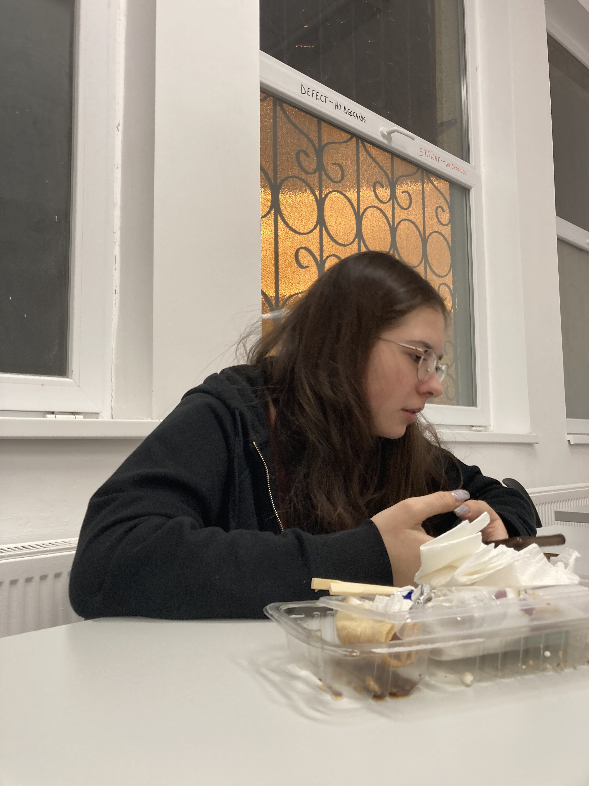

3 februarie 2024
Sala de lectura
💜 Te iubesc pentru ca mi-ai inflorit drumul potrivit al vietii 💜
Viața ar fi grea fără alți oameni alaturi de noi. Persoanele din jurul nostru sunt cele care ne motivează, care ne asculta, dar care ne și dezamăgesc. Trandafirii
au și ei țepi. Datorita ție, viața mea a luat o cale total diferită. Daca n-aș fi fost împreună cu tine, nu aș fi ajuns în contextele sociale in care ajuns și nu
aș fi cunoscut persoanele pe care le-am cunoscut. Direct și indirect, mi-ai schimbat viața astfel încât sa cunosc persoane la care țin și care la rândul lor țin
la mine. Cu fiecare zi realizez ca îți sunt mai dator decât credeam.